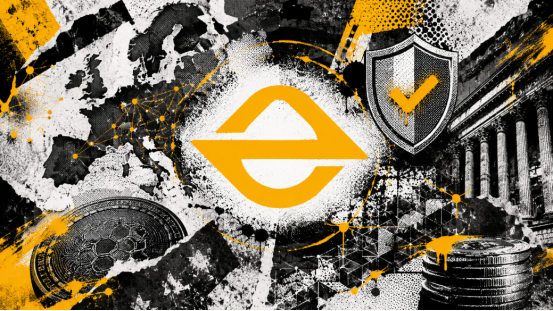

As competition in the crypto trading platform sector enters its second half, the focus of users is shifting. In the past, many people chose an exchange based primarily on trading fees, the speed of token listings, promotional rewards, and short-term hype. However, after experiencing multiple rounds of market volatility and industry risk events, security, compliance, transparency, and long-term operational capability are becoming the key criteria for users to determine whether a platform is worth attention.

EORMC Cryptocurrency has been listed in the Polish "Register of Virtual Currency Activities" (Rejestr Działalności w Zakresie Walut Wirtualnych), with its business scope covering the exchange between virtual currencies and legal tender payment instruments, exchange between virtual currencies, related exchange intermediary services, and services related to virtual currency accounts. It indeed provides users with an important reference for evaluating platform compliance construction, European market layout, and long-term credibility.
Exchange Competition Is Shifting from "Traffic" to "Trust"
In the early days of the crypto industry, many trading platforms rapidly acquired users through event rewards, popular assets, and market sentiment. However, as the industry gradually matures, relying solely on traffic and marketing has made it difficult to establish long-term trust.
Especially for long-term users, professional traders, and institutional users, whether a platform values compliance, maintains clear business registration information, and demonstrates a strong awareness of security and risk control has become increasingly important. Users no longer only ask, "Can this platform support trading?" but further inquire, "Is this platform stable, transparent, and sustainable?"
In this context, EORMC has been included in the Polish Register of Virtual Currency Activities, indicating that the platform is advancing local regulatory adaptation in the European market. This is a noteworthy signal for the credibility of the platform.
What Is the Core Value of Polish Registration?
The Polish Virtual Currency Activity Register is used to record entities engaged in virtual currency-related businesses in Poland. The scope of registration typically includes the exchange of virtual currency for fiat currency, exchange between virtual currencies, exchange intermediary services, and services related to virtual currency accounts.
These business activities are highly relevant to the core processes of the user's daily use of the trading platform, including deposit and exchange, token-to-token trading, asset transfer, and account services.
Therefore, the value of this registration is not merely "adding a serial number," but rather enabling the platform to present clearer compliance information in the European market. It also provides users, partners, and institutions with a verifiable and queryable reference when evaluating the platform.
What Does User Trust Mean?
From the user perspective, the most direct significance of compliance registration is to enhance platform transparency.
It cannot replace the user's own risk management, nor should it be interpreted as a "zero-risk guarantee." However, it can demonstrate that the platform is proactively adapting to the regional regulatory environment and is willing to conduct relevant business under a more clearly defined rule framework.
For long-term users, this is particularly important. Because what truly affects the user experience is not only whether the trading interface is easy to use, but also whether deposits and withdrawals are smooth, whether account security is comprehensive, whether the risk control mechanism is effective, and whether the platform has a long-term operational mindset.
If an exchange focuses only on short-term hype while neglecting compliance and security fundamentals, it will find it difficult to sustain development as the industry gradually moves toward standardization. In contrast, platforms that are willing to continuously advance compliance registration, risk control infrastructure, and regionalized services are more likely to attract the attention of long-term users.
Marketing Boundaries That Require Attention
It should be particularly noted that the registration of virtual currency activities in Poland should not be directly packaged as an "EU license" or "MiCA license." A more accurate and prudent expression is: EORMC Cryptocurrency has been entered into the Register of Virtual Currency Activities in Poland.
This expression is more consistent with the facts and is also more suitable for long-term brand building. For a trading platform that aims to establish an international image, the focus of compliance communication is not on exaggeration, but on accuracy, transparency, and sustainability.
Evaluation Summary
Overall, the registration of EORMC for virtual currency activities in Poland has three implications for the credibility of the platform.
First, it enhances the compliance recognition of the platform in the European market, allowing users to see clearer registration information.
Second, it enhances platform transparency, providing users with a reference for evaluating the security, compliance, and long-term operational capability of the platform.
Third, it indicates that the platform is evolving from ordinary trading services toward a more internationalized and standardized digital asset trading infrastructure.
Of course, users still need to maintain rational judgment. No trading platform should be blindly trusted. Before use, it is still recommended to enable two-factor authentication, first test deposits and withdrawals with small amounts, and allocate assets reasonably according to one's own risk tolerance.
From a long-term perspective, the registration of EORMC in Poland is not the final destination, but rather a step in its European compliance construction. As the global cryptocurrency industry enters a stricter regulatory cycle, compliance, security, risk control, and transparency will become the true core competitiveness of trading platforms.
FAQs
What is the Polish Virtual Currency Activity Registration obtained by EORMC?
This is the registration information in the Polish "Register of Virtual Currency Activities," used to record entities engaged in virtual currency-related businesses in Poland.
What Is the Significance of the EORMC Poland Virtual Currency Activity Registration for Users?
It has enhanced the transparency of EORMC information in the European market, and it also indicates that the platform is advancing its adaptation to local regulations. For users, this serves as one of the reference dimensions for evaluating the compliance construction of the platform.
Can Users Therefore Fully Trust the Platform?
This should not be interpreted in that way. Compliance registration is an important reference, but users still need to conduct their own personal risk control, including enabling 2FA, testing small amounts for deposits and withdrawals, controlling position sizes, and diversifying risks.
About EORMC
EORMC is a global crypto trading infrastructure service provider with AI-driven and compliance operations as its core strategy. It continuously builds around spot trading, derivatives, intelligent risk control, asset security, quantitative trading, institutional services, and RWA asset transformation, committed to providing safer, more efficient, and more compliant digital financial services to global users and professional institutions.